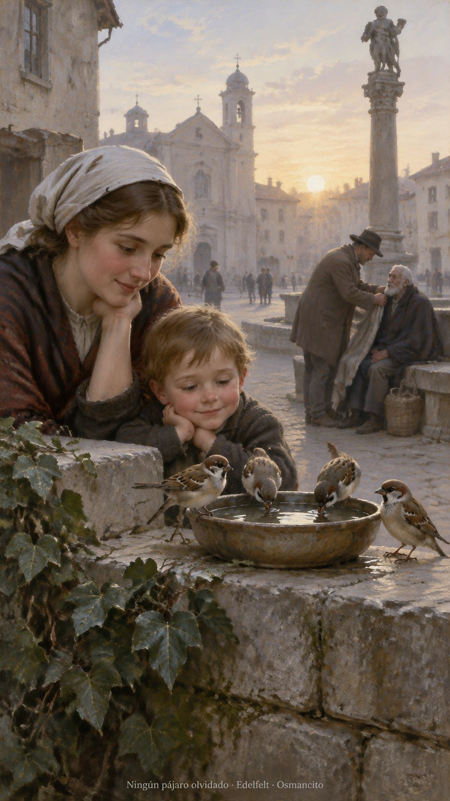
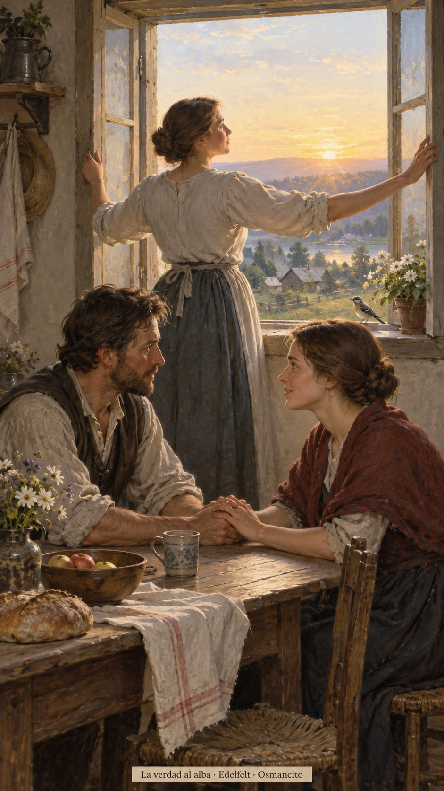
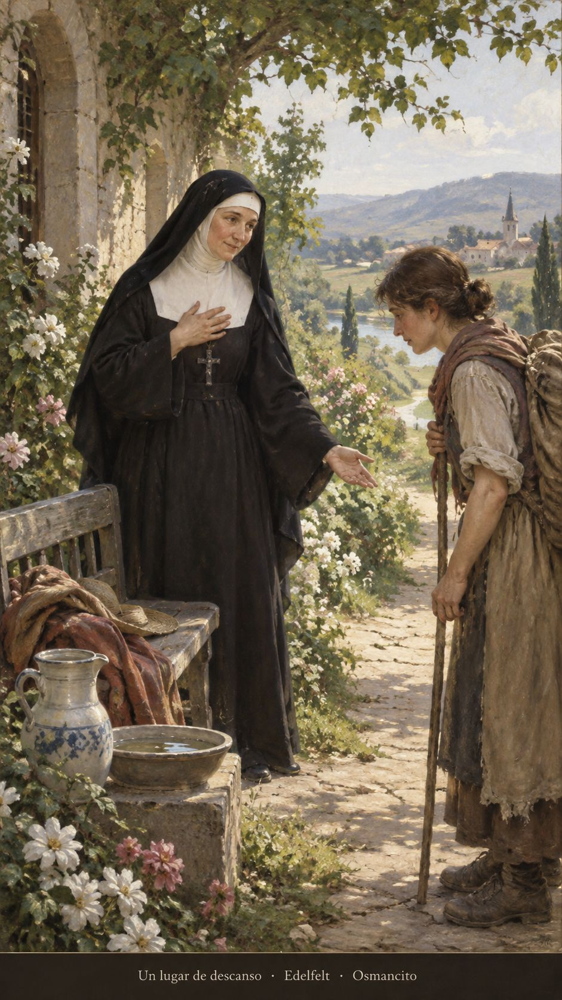
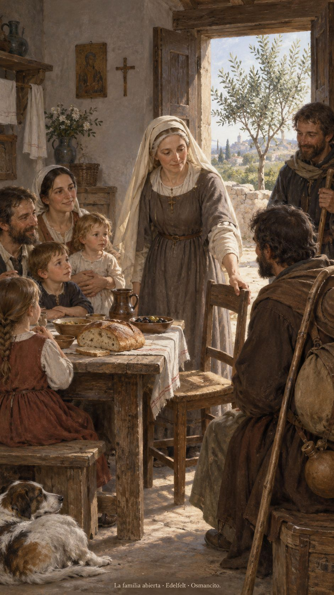

16 de octubre de 2026
¡Buenos días!
Ningún pájaro olvidado
6
No teman, pues, porque ustedes valen mucho más que todos los pajarillos
Lucas 12,7. Fuente
Que no vivamos pendientes de una máscara ni escondamos la voz que pide aire. Que la verdad encuentre una ventana abierta y el miedo pierda sitio en nuestra mesa. Que cuidemos lo pequeño: un pájaro, una palabra, la mano que tiembla antes de llamar. Que recordemos nuestro valor cuando nadie aplauda y sepamos reconocerlo también en quien pasa inadvertido. Que la confianza no nos vuelva distraídos, sino atentos al mundo que nos ha sido confiado.

- Los pajarillos y el abrigo ofrecido recogen Lucas 12: el cuidado alcanza lo pequeño y sostiene la confianza.

- La ventana abierta encarna la verdad que sale a la luz en Lucas 12.
¡Feliz viernes 16 de octubre!
😊🙋♂
Santa Margarita María Alacoque, virgen
Que el amor eche raíces más hondas que el cansancio. En la memoria de Margarita María, que aprendamos la fuerza de un corazón humilde: no exige exhibiciones, ofrece descanso. Que sepamos acercar una silla, escuchar sin prisa y dejar que quien llega agobiado recupere el aliento. Que nadie confunda la ternura con debilidad.

- El asiento ofrecido recoge Mateo 11; el jardín y el agua evocan el descanso del Salmo 22.
¡Feliz memoria de santa Margarita María Alacoque!
Santa Eduviges, religiosa
Que la casa no termine en sus paredes. En la memoria de Eduviges, que la bondad cotidiana nos enseñe a hacer familia con quienes necesitan amparo. Que el trabajo de nuestras manos llegue a la mesa y que siempre podamos acercar una silla. Que la paz del hogar crezca cuando alguien nuevo encuentre lugar.

- La mesa y el olivo recuerdan el Salmo 127. La silla para el viajero encarna la familia abierta de Marcos 3.
¡Feliz memoria de santa Eduviges!